Part 7 · Traffic Control for School Areas · Chapter 7B
Signs
The core sign chapter for school areas: sign/plaque sizing, the School (S1-1) sign family and California School Assemblies A(CA)–E(CA), school crossing signs (including in-street and overhead assemblies), school bus stop signs, school speed limit signs and plaques, higher-fines-zone signage, and parking/stopping controls.
7B.01Design of School Signs
- 01Except as provided in Section 2A.07, the sizes of signs and plaques used on conventional roadways in school areas shall be as shown in Table 7B-1.
- 02The sizes in the Oversized column in Table 7B-1 shall be used on expressways in school areas.
- 03The sizes in the Oversized column should be used on roadways that have four or more lanes with posted speed limits of 40 mph or higher.
- 04Signs and plaques larger than those shown in Table 7B-1 may be used (see Section 2A.07).
- 05School warning signs, including the "SCHOOL" portion of the School Speed Limit (S5-1) sign and including any supplemental plaques used in association with these warning signs, shall have a fluorescent yellow-green background with a black legend and border unless otherwise provided in this Manual for a specific sign.
- 06The signs used for school area traffic control shall be retroreflective or illuminated.
- 07Sections 2A.13 and 2A.14 contain provisions regarding the installation, placement, and location of signs.
- 08Section 2A.15 contains provisions regarding the mounting heights of signs.
- 09Section 2A.16 contains provisions regarding the lateral offsets of signs.
- 10The "Standard Highway Signs" publication (see Section 1A.05) contains information regarding sign lettering.
- 11In-roadway signs for school traffic control areas may be used consistent with the requirements of Sections 2B.20 and 7B.03.
- 12Examples of location of school area signs and California School Assemblies for typical installations are shown in Figures 7B-2, 7B-2(CA), 7B-3, and 7B-101(CA) through 7B-104(CA).
- 13Examples of school area signing, markings, flashing beacons, and overhead school signs are shown in Figures 7B-2(CA) and Figures 7B-101(CA) through 7B-104(CA).
| Sign | Sign Designation | Section | Conventional Road | Minimum | Oversized |
|---|---|---|---|---|---|
| School | S1-1 | 7B.02 | 36 x 36 | 30 x 30 | 48 x 48 |
| School Bus Stop Ahead | S3-1 | 7B.04 | 36 x 36 | 30 x 30 | 48 x 48 |
| School Bus Turn Ahead | S3-2 | 7B.04 | 36 x 36 | 30 x 30 | 48 x 48 |
| Reduced School Speed Limit Ahead | S4-5, S4-5a | 7B.05 | 36 x 36 | 30 x 30 | 48 x 48 |
| 7B.05 | 24 x 48 | — | 36 x 72 | ||
| 7B.02 | 24 x 30 | — | 36 x 48 | ||
| End School Speed Limit | S5-3 | 7B.05 | 24 x 30 | 24 x 30 | 36 x 48 |
| Yield (Stop) Here for School Crossing | R1-5a, | 7B.03 | 36 x 36 | — | — |
| In-Street Ped or School Crossing | R1-6, | 7B.03 | 12 x 36 | N/A | N/A |
| Overhead School Crossing | R1-9b, | 7B.03 | 90 x 24 | — | — |
| Speed Limit (School Use) | R2-1 | 7B.05 | 24 x 30 | 24 x 30 | 36 x 48 |
| 7B.06 | 24 x 30 | — | 36 x 48 | ||
| 7B.06 | 24 x 30 | — | 36 x 48 |
| Plaque | Sign Designation | Section | Conventional Road | Minimum | Oversized |
|---|---|---|---|---|---|
| 7B.06 | 24 x 12 | — | 36 x 18 | ||
| When Children Are Present | S4-2P | 7B.06 | 24 x 12 | 24 x 10 | 36 x 18 |
| School | S4-3P | 7B.02, 7B.05 | 24 x 9 | 24 x 8 | 36 x 12 |
| 7B.05, 7B.06 | 24 x 12 | — | 36 x 18 | ||
| 7B.05 | 24 x 12 | — | 36 x 18 | ||
| 7B.02 | 24 x 12 | — | 30 x 18 | ||
| 7B.06 | 24 x 18 | — | 36 x 24 | ||
| 7B.06 | 24 x 18 | — | 36 x 24 | ||
| 7B.06 | 24 x 18 | — | 36 x 24 | ||
| XX Feet (2-line) | W16-2P | 7B.02, 7B.03 | 24 x 18 | 24 x 18 | 30 x 24 |
| XX Ft (1-line) | W16-2aP | 7B.02, 7B.03 | 24 x 12 | 24 x 12 | 30 x 18 |
| Directional Arrow | W16-5P | 7B.02, 7B.03 | 24 x 18 | 24 x 18 | 30 x 21 |
| Advance Turn Arrow | W16-6P | 7B.02, 7B.03 | 24 x 18 | 24 x 18 | 30 x 21 |
| Downward Diagonal Arrow | W16-7P | 7B.02, 7B.03 | 21 x 15 | 24 x 12 | 30 x 21 |
| Ahead | W16-9P | 7B.02, 7B.03 | 24 x 12 | 24 x 12 | 30 x 18 |
Table notes (from source): (1) Larger sizes may be used when appropriate. (2) Dimensions are shown in inches, width x height. (3) Minimum sign sizes for multi-lane conventional roads shall be as shown in the Conventional Road column. (4) Larger plaque sizes can optionally be specified to match sign widths in school sign assemblies. (5) Signs/designations shown with strikethrough above are marked as deleted in the source figures and table redline — see the callout below the Section 7B.06 heading and the notes at Sections 7B.03 Paragraph 16a and 7B.05 Paragraph 21 for the underlying rationale.
| Assembly | Sign Designation | Section | Conventional Road | Minimum | Oversized |
|---|---|---|---|---|---|
| School Warning Assembly A(CA) | SW24-1(CA) | 7B.02 | 36 x 48 | 30 x 42 | 48 x 60 |
| School Crosswalk Warning Assembly B(CA) | SW24-2(CA) | 7B.03 | 36 x 54 | 30 x 48 | 48 x 66 |
| School Speed Limit Assembly C(CA) | SR4-1(CA) | 7B.05 | 36 x 72 | 24 x 48 | 48 x 96 |
| School Advance Warning Assembly D(CA) | SW24-3(CA) | 7B.03 | 36 x 36 | 30 x 30 | 48 x 48 |
| School Crosswalk Warning Assembly E(CA) | R1-9 | 2B.20, 7B.03 | 90 x 24 | 90 x 24 | 90 x 24 |
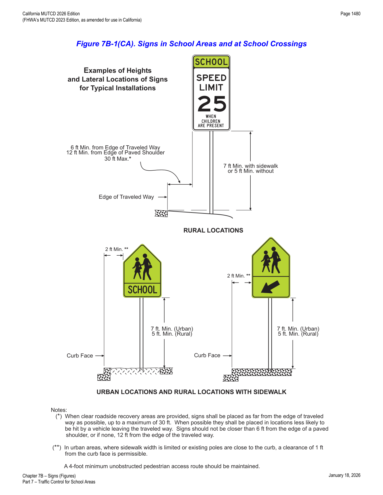
In practice, the 30-foot maximum offset from the traveled way (Figure 7B-1(CA), rural note *) only applies where a clear roadside recovery area exists; absent that, use the tighter 6 ft/12 ft minimum offsets and place signs where they are least likely to be struck by an errant vehicle.
7B.02School Area Signs and Plaques
- 01Many state and local jurisdictions find it beneficial to advise road users that they are approaching a school that is adjacent to a highway, where additional care is needed, even though no school crossing is involved and the speed limit remains unchanged. Additionally, some jurisdictions designate school zones that have a unique legal standing in that fines for speeding or other traffic violations within designated school zones are increased or special enforcement techniques such as photo radar systems are used. It is important and sometimes legally necessary to mark the beginning and end points of these designated school zones so that the road user is given proper notice.
- 02The School (S1-1) sign (see Figure 7B-1 or 7B-1(CA)) has the following four applications:
- A. School Area — the S1-1 sign can be used to warn road users that they are approaching a school area that might include school buildings or grounds, a school crossing, or school-related activity adjacent to the highway.
- B. School Zone — the S1-1 sign can be used to identify the location of the beginning of a designated school zone.
- C. School Advance Crossing — if combined with an AHEAD (W16-9P) plaque or an XX FEET (W16-2P or W16-2aP) plaque to comprise the School Advance Crossing assembly (see Figure 7B-1), the S1-1 sign can be used to warn road users that they are approaching a crossing where schoolchildren cross the roadway (see Section 7B.03).
- D. School Crossing — if combined with a diagonal downward-pointing arrow (W16-7P) plaque to comprise the School Crossing assembly (see Figure 7B-1), the S1-1 sign can be used to warn approaching road users of the location of a crossing where schoolchildren cross the roadway (see Section 7B.03).
- 02aThe School Assemblies A(CA) through E(CA) are shown in Figure 7B-1 and Table 7B-1(CA).
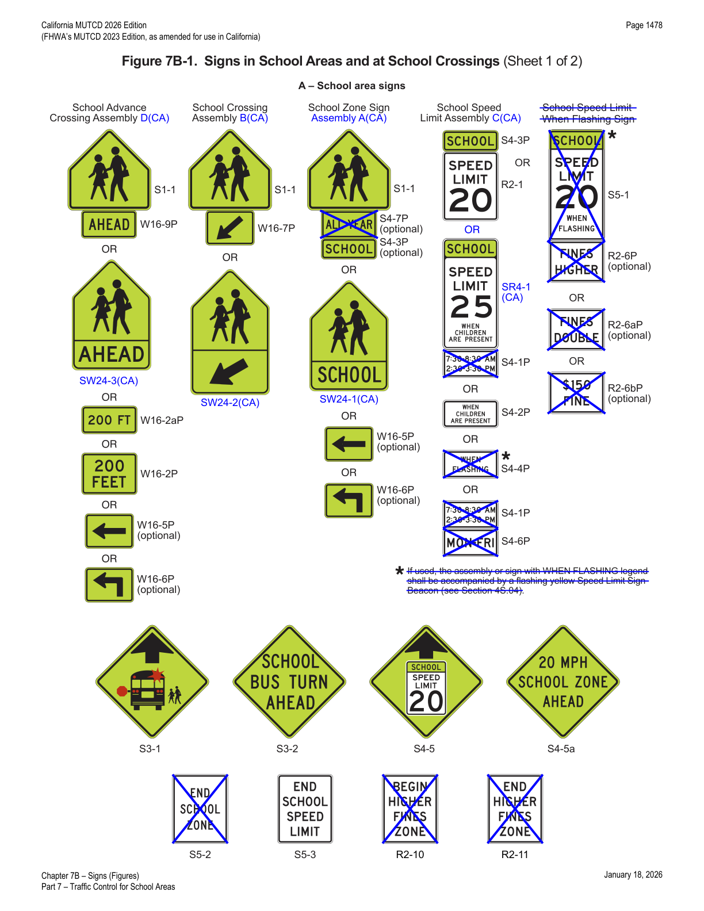
- 03If a school area or school zone is located on a cross street in close proximity to the intersection, a School (S1-1) sign with a supplemental arrow (W16-5P or W16-6P) plaque (see Figure 7B-1) may be installed on each approach of the street or highway to warn road users making a turn onto the cross street that they will encounter a school area soon after making the turn.
- 04If a school zone has been designated under State or local statute, a School (S1-1) sign (see Figure 7B-1 or 7B-1(CA)) shall be installed to identify the beginning point(s) of the designated school zone (see Figure 7B-2).
- 05A School Zone (S1-1) sign may be supplemented with a SCHOOL (S4-3P) plaque (see Figure 7B-1 or 7B-1(CA)).
- 06A School Zone (S1-1) sign may be supplemented with an ALL YEAR (S4-7P) plaque (see Figure 7B-1) if the school operates on a 12-month schedule.
- 07The downstream end of a designated school zone may be identified with an END SCHOOL ZONE (S5-2) sign (see Figures 7B-1 and 7B-2).
- 08The School Warning Assembly A(CA) does not need to be posted if there are no school pedestrians using the highway and the school grounds are separated from the highway by a fence, gate, or other physical barrier. Refer to CVC § 22352.
- 09The School Warning Assembly A(CA) shall be used on streets with prima facie 25 mph speed limits that are contiguous to a school building or school grounds.
- 10The SCHOOL (S4-3P) plaque shall not be used alone.
- 11If used, the School Warning Assembly A(CA) should be posted at the school boundary. Refer to CVC § 22352.
- 12If used, the School Warning Assembly A(CA) may be posted up to 500 feet in advance of the school boundary. Refer to CVC § 22352.
Table 7B-1 and Figure 7B-1 show the S5-2 (END SCHOOL ZONE) sign and the S4-7P (ALL YEAR) plaque marked with a strikethrough/blue "X" as deleted from California use, yet Paragraphs 06 and 07 above (and Section 7B.05 Paragraph 04) continue to describe both devices as available options, and Figures 7B-2 and 7B-4 continue to depict S5-2 as an in-use alternative to S5-3. This is flagged here as an unresolved inconsistency in the source document rather than silently resolved one way or the other — verify current status of the S5-2 sign and S4-7P plaque against the adopted California MUTCD before specifying them on a project.
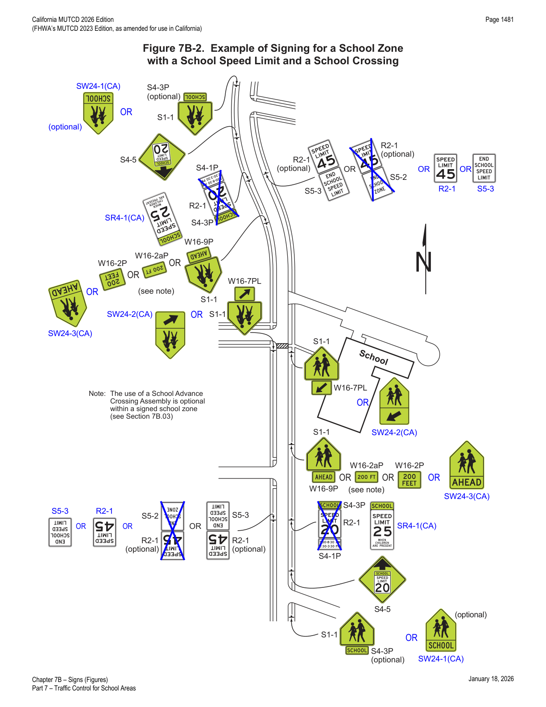
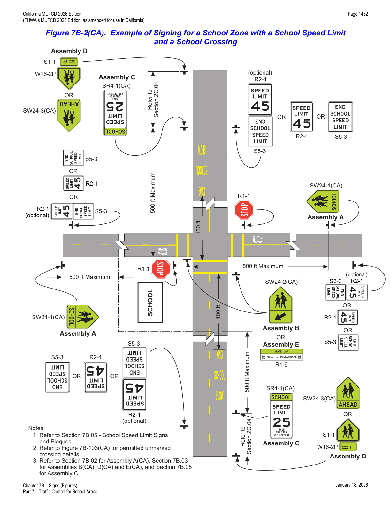
In practice, Figure 7B-2(CA) is the master diagram to hand a designer: it shows how Assembly A (school zone boundary), Assembly D (advance crossing warning), Assembly B or E (at-crossing warning), and Assembly C (speed limit) are sequenced together at a typical signalized or stop-controlled school-zone intersection.
7B.03School Crossing Signs
- 01The School Advance Crossing assembly (see Figure 7B-1 or 7B-1(CA)) shall consist of a School Advance Warning Assembly D(CA), or a School (S1-1) sign supplemented with an AHEAD (W16-9P) plaque or an XX FEET (W16-2P or W16-2aP) plaque.
- 02Except as provided in Paragraph 3 of this Section, a School Advance Crossing assembly or Assembly D(CA) shall be used in advance (see Table 2C-3 for advance placement guidelines) of the first School Crossing assembly that is encountered in each direction as traffic approaches a school crosswalk (see Figure 7B-3).
- 03The School Advance Crossing assembly or Assembly D(CA) may be omitted (see Figure 7B-2) where a School Zone (S1-1) sign (see Section 7B.02) is installed to identify the beginning of a school zone in advance of the School Crossing assembly.
- 04If a school crosswalk is located on a cross street in close proximity to an intersection, a School Advance Crossing assembly with a supplemental arrow (W16-5P or W16-6P) plaque may be installed on each approach of the street or highway to warn road users making a turn onto the cross street that they will encounter a school crosswalk soon after making the turn (see Figure 7B-3).
- 05A 12-inch reduced size in-street School (S1-1) sign (see Figure 7B-1), installed in compliance with the mounting height and special mounting support requirements for an In-Street Pedestrian Crossing (R1-6 or R1-6a) sign (see Section 2B.20), may be used in advance of a school crossing to supplement the post-mounted school warning signs. A 12 x 6-inch reduced size AHEAD (W16-9P) plaque (see Figure 7B-1) may be mounted below the reduced size in-street School (S1-1) sign.
- 05aThe School Advance Warning Assembly D(CA) shall be used in advance of any School Crosswalk Warning Assembly B(CA), School Crosswalk Warning Assembly E(CA), or the School Speed Limit Assembly C(CA).
- 06If used, the School Crossing assembly (Assembly B(CA)) (see Figure 7B-1 or 7B-1(CA)) shall be installed at the school crossing (see Figures 7B-2 and 7B-3), or as close to it as possible, and shall consist of a School (S1-1) sign supplemented with a diagonal downward-pointing arrow (W16-7P) plaque (see Section 2C.63) to show the location of the crossing.
- 07The School Crossing assembly (Assembly B(CA) or E(CA)) shall not be used at crossings other than those adjacent to schools and those on established school pedestrian routes.
- 08The School Crossing assembly (Assembly B(CA) or E(CA)) shall not be installed on an approach controlled by a STOP (R1-1) sign or a YIELD (R1-2) sign or a traffic signal, except as provided in Paragraphs 9 and 10 of this Section.
- 08aThe School Crosswalk Warning Assembly B(CA) or E(CA) shall be posted at all yellow school crosswalks that are not controlled by a STOP (R1-1) sign, a YIELD (R1-2) sign, or a traffic signal.
- 08bThe School Crosswalk Warning Assembly B(CA) or E(CA) should be posted at all white school crosswalks that are not controlled by a STOP (R1-1) sign, a YIELD (R1-2) sign, or a traffic signal.
- 08cThe School Crosswalk Warning Assemblies B(CA) and E(CA) are shown in Figures 7B-1 and 7B-101(CA) through 7B-104(CA).
- 09The School Crossing assembly may be installed on an approach to a circular intersection controlled by a YIELD sign where the crosswalk is at least 20 feet in advance of the yield point at the entrance to a circulatory roadway.
- 10At a signalized or stop-controlled intersection, the School Crossing assembly may be installed on an approach to a channelized right-turn lane controlled by a YIELD sign where the crosswalk is at least 20 feet in advance of the yield point.
- 11A Yield Here To (Stop Here For) School Crossing (R1-5a or R1-5c) sign (see Figure 7B-4) may be used, in accordance with the provisions of Section 2B.19, in advance of a marked crosswalk that crosses an uncontrolled multi-lane approach within school zones.
- 11aRefer to FHWA's List of Known Errors for an error in Paragraph 11 text above. Refer to Section 1A.04 for more details.
- 12The In-Street Pedestrian Crossing (R1-6 or R1-6a) sign (see Section 2B.20 and Figure 7B-1) or the In-Street School Crossing (R1-6b or R1-6c) sign (see Figure 7B-1) may be used at school crossings on approaches that are not controlled by a traffic control signal, a pedestrian hybrid beacon, or an emergency-vehicle hybrid beacon. If used at a school crossing, a 12 x 4-inch SCHOOL (S4-3P) plaque (see Figure 7B-1) may be mounted above the sign. The STATE LAW legend on the R1-6 series signs may be omitted.
- 13The In-Street Pedestrian Crossing (R1-6 or R1-6a) sign or In-Street School Crossing (R1-6b or R1-6c) sign may be used at intersections or midblock crossings with flashing beacons.
- 14The Overhead School Crossing (R1-9b or R1-9c) sign (see Figure 7B-1) may be used at school crossings on approaches that are not controlled by a traffic control signal, pedestrian hybrid beacon, or an emergency-vehicle hybrid beacon. The STATE LAW legend on the R1-9 series signs may be omitted.
- 14aIf used, the School Crosswalk Warning Assembly E(CA) (see Figures 7B-1 and 7B-101(CA) through 7B-104(CA)) shall be installed in an overhead location at the marked crosswalk, or as close to it as possible, and shall consist of a modified R1-9 sign to show the location of the crossing.
- 14bFor uncontrolled locations with more than one lane in each direction of travel, advance yield lines (see Section 3B.19) may be used with the "Yield Here to Pedestrians" signs (R1-5 or R1-5a).
- 15When used at an uncontrolled crossing, the In-Street or Overhead Pedestrian Crossing sign shall be used only as a supplement to a School Crossing assembly with a diagonal downward-pointing arrow (W16-7P) plaque at the crosswalk location.
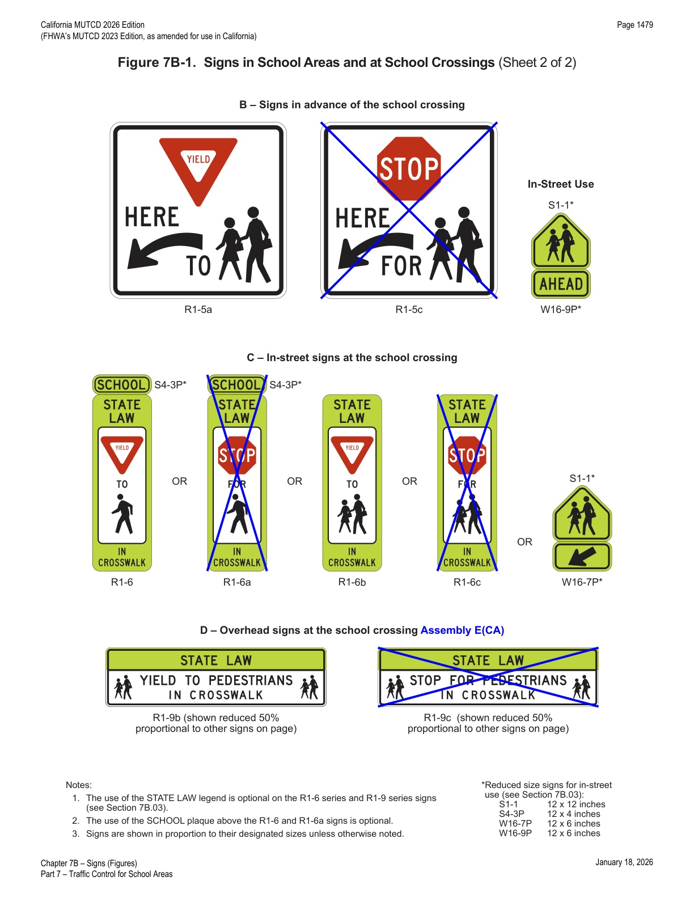
- 16A 12-inch reduced size in-street School (S1-1) sign (see Figure 7B-1) may be used instead of the In-Street Pedestrian Crossing (R1-6 or R1-6a) or the In-Street School Crossing (R1-6b or R1-6c) sign at a school crossing on approaches that are not controlled by a traffic control signal, pedestrian hybrid beacon, or an emergency-vehicle hybrid beacon. A 12 x 6-inch reduced size diagonal downward-pointing arrow (W16-7P) plaque (see Figure 7B-1) may be mounted below the reduced size in-street School (S1-1) sign.
- 16aThe In-Street Pedestrian Crossing and the In-Street Schoolchildren Crossing (R1-6a and R1-6c) signs are deleted, as a stop is not required in California per CVC § 21950.
- 17If an In-Street Pedestrian Crossing sign, an In-Street School Crossing sign, or a reduced size in-street School (S1-1) sign is placed in the roadway, the sign support shall comply with the mounting height and special mounting support requirements for an In-Street Pedestrian Crossing (R1-6 or R1-6a) sign (see Section 2B.20).
- 18The In-Street Pedestrian Crossing sign, the In-Street School Crossing sign, the Overhead Pedestrian Crossing sign, and the reduced size in-street School (S1-1) sign shall not be used on approaches that are controlled by stop control, a traffic control signal, a pedestrian hybrid beacon, or an emergency-vehicle hybrid beacon.
Paragraph 16a explains why the table in Section 7B.01 shows R1-5c, R1-6a, R1-6c, and R1-9c struck through: every "STOP"-faced in-street or overhead pedestrian-crossing sign has been deleted from California use because CVC § 21950 does not require a vehicle to stop for a pedestrian in an unmarked or marked crosswalk in the way the STOP-faced federal sign implies — only the YIELD-faced counterparts (R1-5a, R1-6, R1-6b, R1-9b) remain valid in California.
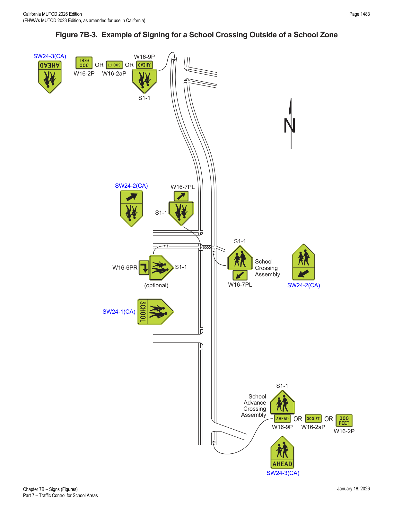
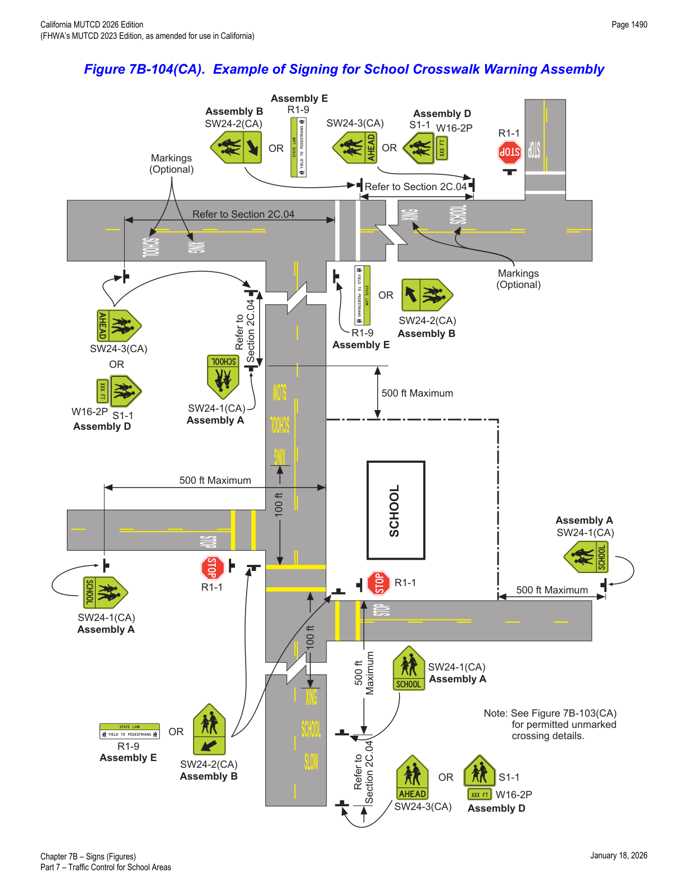
In practice, the choice between Assembly B(CA) (post-mounted, diagonal-arrow) and Assembly E(CA) (overhead, modified R1-9) at the crosswalk itself usually comes down to sight-distance and roadway width — the overhead assembly is favored on wider multi-lane approaches where a post-mounted sign might be screened by a queued vehicle.
7B.04School Bus Stop Signs
- 01The School Bus Stop Ahead (S3-1) sign (see Figure 7B-1) should be installed in advance of locations where a school bus, when stopped to pick up or discharge passengers, is not visible to road users for an adequate distance and where there is no opportunity to relocate the school bus stop to provide adequate sight distance.
- 01aThe School Bus Stop Ahead (S3-1) sign shall be installed in advance of an approved school bus stop where there is not a clear view in advance of the stop from a distance of 200 feet. Refer to CVC § 22504(c).
- 02The SCHOOL BUS TURN AHEAD (S3-2) sign (see Figure 7B-1) may be installed in advance of locations where a school bus turns around on a roadway at a location not visible to approaching road users for a distance as determined by the "0" column under Condition B of Table 2C-3, and where there is no opportunity to relocate the school bus turn-around to provide the distance provided in Table 2C-3.
In practice, the 200-foot sight-distance trigger in Paragraph 01a (CVC § 22504(c)) is a bright-line legal requirement — it is worth a field check with a tape or laser rangefinder rather than an eyeball estimate before deciding the S3-1 sign can be omitted.
7B.05School Speed Limit Signs and Plaques
- 01A School Speed Limit assembly (Assembly C(CA)) (see Figure 7B-1) or a School Speed Limit When Flashing (S5-1) sign (see Figure 7B-1) shall be used to indicate the speed limit where a reduced school speed limit zone has been established based upon an engineering study or where a reduced school speed limit is specified for such areas by statute. The School Speed Limit assembly (Assembly C(CA)) or School Speed Limit When Flashing sign shall be placed at or as near as practicable to the point where the reduced school speed limit zone begins (see Figures 7B-2 and 7B-4).
- 02If a reduced school speed limit zone has been established, a School (S1-1) sign shall be installed in advance (see Table 2C-3 for advance placement guidelines) of the first School Speed Limit sign assembly or S5-1 sign that is encountered in each direction as traffic approaches the reduced school speed limit zone (see Figures 7B-2 and 7B-4).
- 03Except as provided in Paragraph 4 of this Section, the downstream end of an authorized and posted reduced school speed limit zone shall be identified with an END SCHOOL SPEED LIMIT (S5-3) and/or Speed Limit (R2-1) sign (see Figures 7B-1, 7B-1(CA), 7B-2, and 7B-2(CA)).
- 04If a reduced school speed limit zone ends at the same point as a designated school zone (see Section 7B.02), an END SCHOOL ZONE (S5-2) sign may be used instead of an END SCHOOL SPEED LIMIT (S5-3) sign. A standard Speed Limit sign showing the speed limit for the section of highway that is downstream from the authorized and posted reduced school speed limit zone may be mounted on the same post above the END SCHOOL SPEED LIMIT (S5-3) sign or the END SCHOOL ZONE (S5-2) sign, or the Speed Limit (R2-1) sign may be posted by itself (see Figures 7B-2(CA) and 7B-102(CA)).
- 05The beginning point of a reduced school speed limit zone should be at least 200 feet in advance of the school grounds or a school crossing; however, this 200-foot distance should be increased if the reduced school speed limit is 30 mph or higher. The maximum beginning point of a reduced school speed limit zone should not be greater than 500 feet in advance of the school grounds or a school crossing. Refer to Figures 7B-1(CA), 7B-2, 7B-2(CA), and 7B-101(CA) through 7B-103(CA).
- 06The School Speed Limit assembly (Assembly C(CA)) shall be either a static sign assembly, a blank-out sign, or a changeable message sign (see Chapter 2L).
- 07The static School Speed Limit assembly (Assembly C(CA)) shall consist of a top plaque (S4-3P) with the legend SCHOOL, a Speed Limit (R2-1) sign, and a bottom plaque WHEN CHILDREN ARE PRESENT (S4-1P, S4-2P, S4-4P, or S4-6P) indicating the specific periods of the day and/or days of the week that the special school speed limit is in effect (see Figure 7B-1).
- 08When a School Speed Limit When Flashing (S5-1) sign or a Speed Limit (R2-1) sign with a supplemental WHEN FLASHING (S4-4P) plaque is used, a Speed Limit Sign Beacon (see Section 4S.04) shall be used to identify the periods that the school speed limit is in effect.
- 09Fluorescent yellow-green pixels shall be used when the "SCHOOL" message is displayed on a changeable message sign for a school speed limit.
- 10Changeable message signs may use blank-out messages or other methods in order to display the school speed limit only during the periods it applies.
- 11A Vehicle Speed Feedback (W13-20aP) plaque that displays the speed of approaching drivers (see Sections 2B.21 and 2C.13), that is part of a School Speed Limit assembly or a School Speed Limit When Flashing (S5-1) sign, may be used in a school speed limit zone.
- 12If used, the Vehicle Speed Feedback (W13-20aP) plaque should only be used during the time period when the school speed limit is in effect.
- 13A Reduced School Speed Limit Ahead (S4-5 or S4-5a) sign (see Figure 7B-1) should be used to inform road users of a reduced speed zone where the speed limit is being reduced by more than 10 mph, or where engineering judgment indicates that advance notice would be appropriate for the School Advance Warning Assembly D(CA).
- 14If used, the Reduced School Speed Limit Ahead sign shall be followed by a School Speed Limit sign or a School Speed Limit assembly (Assembly C(CA)).
- 15The speed limit displayed on the Reduced School Speed Limit Ahead sign shall be identical to the speed limit displayed on the subsequent School Speed Limit sign or School Speed Limit assembly (Assembly C(CA)).
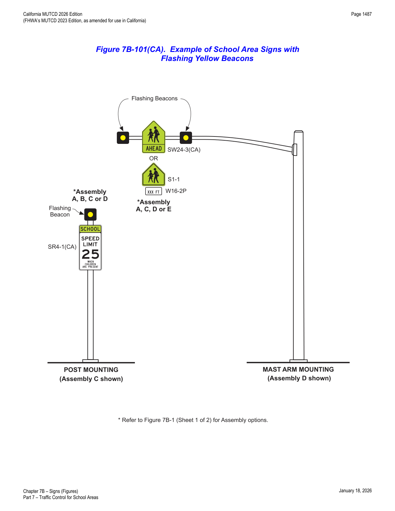
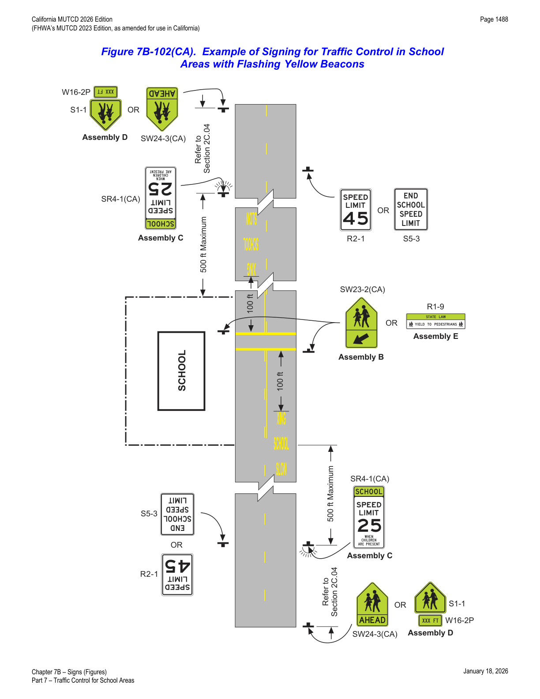
Extended 25 MPH and/or Reduced Speeds in School Zones (CVC § 22352)
- 16For school area traffic control with a reduced school zone speed limit of 15 mph and/or an extended school zone speed limit of 25 mph in a residential district, the Reduced Speed School Zone Ahead (S4-5, S4-5a) sign should be used to give advance notice of a reduced 15 mph school zone speed limit and/or an extended school zone speed limit of 25 mph.
- 17For school area traffic control with a reduced school zone speed limit of 20 mph and/or an extended school zone speed limit of 25 mph in a residential district, the Reduced Speed School Zone Ahead (S4-5, S4-5a) sign may be used to give advance notice of a reduced 15 mph school zone speed limit and/or an extended school zone speed limit of 25 mph.
- 18The School Speed Limit Assembly C(CA) shall be used on streets with speed limits greater than 25 mph that are contiguous to a school building or school grounds.
- 19The School Speed Limit Assembly C(CA) is shown in Figure 7B-1.
- 20If used, the School Speed Limit Assembly C(CA) may be posted up to 500 feet in advance of the school boundary.
- 21The "WHEN FLASHING" and specific time period messages shall not be used in school areas in California, as they are not supported by CVC § 22352. Hence, the Specific Time Period Plaque (S4-1P), WHEN FLASHING (S4-4P), and SCHOOL SPEED LIMIT 20 WHEN FLASHING (S5-1) signs shall not be used in California.
- 22The "WHEN FLASHING" message is misleading because it suggests that the speed limit is in force only when the flashing beacons are in operation. The prima facie speed limit of 25 mph is in effect based on the presence of children per CVC § 22352, not on the operation of the flashing beacons.
- 23Not using the "WHEN FLASHING" message also addresses the situation when children are present but the flashing beacons are inoperative for any reason.
- 24Not using the "WHEN FLASHING" message does not alter the warrants or the use of a flashing yellow beacon or its effectiveness as an attention-getting device.
- 25The specific time period message is misleading because it suggests that the speed limit is in force only during the time period specified. The prima facie speed limit of 25 mph is in effect based on the presence of children per CVC § 22352, not on the time period specified.
This is the direct textual basis for the S5-1, S4-1P, and S4-4P strikethroughs shown in Table 7B-1 and Figure 7B-1: California expressly prohibits the "WHEN FLASHING" and specific-time-period sign legends in school speed zones, so those devices are deleted outright rather than merely disfavored.
Extended 25 MPH and/or Reduced Speeds in School Zones (CVC § 22358.4)
- 26A local authority may declare a 20 or 15 mph prima facie speed limit within 500 feet of a school building or school grounds and an extended 25 mph prima facie speed limit within 500 to 1,000 feet from a school or school grounds.
- 27The extended 25 mph school speed zone can provide a progressive speed reduction.
- 28If the local authority declares by ordinance or resolution the above prima facie speed limits, all of the following criteria shall be met:
- A. Street or highway is in a residential district.
- B. Street or highway outside of a school zone has a posted speed limit no greater than 30 mph.
- C. Street or highway has no more than a total of two through traffic lanes (one in each direction or two in one direction).
- D. The reduced school zone speed limit of 20 or 15 mph is within 500 feet of school grounds.
- E. The extended school zone speed limit of 25 mph is within 500 to 1,000 feet of school grounds.
- 29When used, a local ordinance or resolution adopted to establish a 20 or 15 mph reduced school zone speed limit and/or an extended 25 mph school zone speed limit shall not be effective until School Speed Limit Assembly C(CA), giving notice of the speed limit(s), is erected upon the highway.
- 30On a State highway, the ordinance or resolution shall not be effective until the ordinance or resolution has been approved by Caltrans and appropriate school zone speed signs are erected upon the State highway.
- 31For purposes of a 20 or 15 mph reduced prima facie speed limit, School Speed Limit Assembly C(CA) indicating a speed limit of 20 or 15 mph shall be placed at a distance up to 500 feet away from school grounds. For purposes of an extended 25 mph prima facie speed limit, School Speed Limit Assembly C(CA) indicating a speed limit of 25 mph shall be placed at any distance between 500 to 1,000 feet away from school grounds. Refer to Figure 7B-103(CA).
- 32The established school speed limits shall be effective when children are going to or leaving the school, either during school hours or during the noon recess hour. The school speed limits shall also apply when the school grounds are not separated from the highway by a fence, gate, or other physical barrier while the grounds are in use by children (this condition can apply at any time of day or any day of the week).
- 32The determination to reduce a prima facie speed limit to 20 or 15 mph and/or extend a 25 mph school zone speed limit, as described above, shall be documented in writing, in an engineering study. The engineering study shall identify the provisions of Section 627 of the California Vehicle Code (CVC) that support the reduced and/or extended school zone speed limit(s).
Note: the source document numbers both of the paragraphs above as "32" — this duplicate numbering appears in the source itself and is preserved here rather than silently renumbered.
- 33When preparing an engineering study pursuant to the Standard above, the local authority should cite all elements of an Engineering and Traffic Survey, as discussed in CVC § 627, that support the need for a reduced speed limit of 20 or 15 mph and/or an extended 25 mph school zone speed limit.
- 34The documentation of prevailing speeds found in CVC § 627 can be used to establish an existing speed profile for the school zone, but the 85th percentile speed is not used to set the reduced or extended school speed limit.
- 35The local authority shall reimburse Caltrans for all costs incurred by Caltrans under this section.
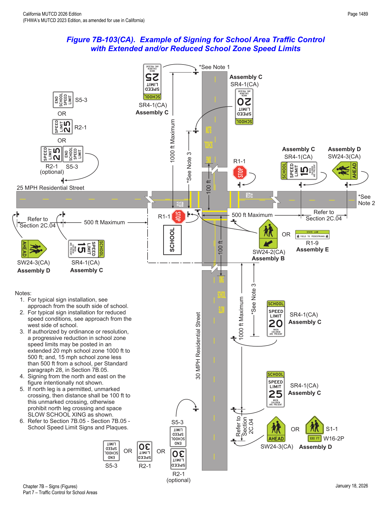
In practice, the CVC § 22358.4 progressive-reduction option (Paragraph 28) is most useful on two-lane residential streets outside a school's immediate frontage — it lets an agency step traffic down from 30 mph, to an extended 25 mph zone at 500–1,000 feet, to a tighter 20 or 15 mph zone within 500 feet, rather than a single abrupt reduction at the school boundary.
7B.06Higher Fines Zone Signs and Plaques in School Areas
Source Paragraph 00 states: "The section is deleted as there is no law on higher fines in school areas in California." Every sign and plaque this section discusses — BEGIN/END HIGHER FINES ZONE (R2-10, R2-11), FINES HIGHER / FINES DOUBLE / $XX FINE (R2-6P, R2-6aP, R2-6bP), and the associated S4-1P/S4-4P/S4-6P time-and-condition plaques — is shown struck through in Table 7B-1 and crossed out in Figures 7B-1, 7B-4, and 7B-5. The full text below is preserved for reference and historical/cross-jurisdictional context (it mirrors the national MUTCD's higher-fines-zone provisions), but none of it is currently applicable under California law.
- 00The section is deleted, as there is no law on higher fines in school areas in California.
- 01The signs and plaques used to inform road users of higher fines zones and their locations depend on whether the fines apply to all traffic violations or only to speeding violations. Their locations also depend on whether the higher fines zone begins and/or ends at the same point as the school zone or school speed limit zone. Figures 7B-4 and 7B-5 show examples of higher fines zone signing.
- 02Where increased fines are imposed for traffic violations within a designated school zone:
- A. A BEGIN HIGHER FINES ZONE (R2-10) sign (see Figure 7B-1) or a FINES HIGHER (R2-6P), FINES DOUBLE (R2-6aP), or $XX FINE (R2-6bP) plaque (see Figure 7B-1) shall be installed as a supplement to the School Zone (S1-1) sign to identify the beginning point of the higher fines zone (see Figures 7B-4 and 7B-5); and
- B. An END HIGHER FINES ZONE (R2-11) sign (see Figure 7B-1) or an END SCHOOL ZONE (S5-2) sign (see Figure 7B-1) shall be installed at the downstream end of the zone to notify road users of the termination of the increased fines zone (see Figure 7B-5).
- 03If exceeding the speed limit is the only traffic violation that is subject to higher fines, a FINES HIGHER (R2-6P), FINES DOUBLE (R2-6aP), or $XX FINE (R2-6bP) plaque shall be posted with the School Speed Limit (S5-1) sign and shall not be posted beneath the School Zone (S1-1) sign (see Section 7B.05).
- 04If the portion of the roadway that is subject to higher fines does not begin at the location of the School Zone (S1-1) sign, a BEGIN HIGHER FINES ZONE (R2-10) sign shall be placed at the point where the higher fines begin (see Sheet 2 of Figure 7B-5).
- 05If a BEGIN HIGHER FINES ZONE (R2-10) sign is used downstream of the School Zone (S1-1) sign, a FINES HIGHER (R2-6P), FINES DOUBLE (R2-6aP), or $XX FINE (R2-6bP) plaque may also be placed beneath the School Zone (S1-1) sign.
- 06Where appropriate, one of the following plaques may be mounted below the sign that identifies the beginning point of the higher fines zone:
- A. A S4-1P plaque (see Figure 7B-1) specifying the times that the higher fines are in effect,
- B. A WHEN CHILDREN ARE PRESENT (S4-2P) plaque (see Figure 7B-1), or
- C. A WHEN FLASHING (S4-4P) plaque (see Figure 7B-1) if used in conjunction with a yellow flashing beacon.
- 07If other traffic violations in addition to exceeding the speed limit are subject to higher fines, then the duplicate FINES HIGHER (R2-6P), FINES DOUBLE (R2-6aP), or $XX FINE (R2-6bP) plaque should be omitted from the School Speed Limit When Flashing (S5-1) sign (see Section 7B.05).
- 08If a higher fines zone ends at the same point as a reduced school speed limit zone, an END SCHOOL ZONE (S5-2) sign may be used instead of a combination of an END HIGHER FINES ZONE (R2-11) sign and an END SCHOOL SPEED LIMIT (S5-3) sign (see Figure 7B-5).
- 09Where the higher fines zone is established by statute, the BEGIN HIGHER FINES ZONE (R2-10) sign, FINES HIGHER (R2-6P), FINES DOUBLE (R2-6aP), and $XX FINE (R2-6bP) plaques may be omitted.
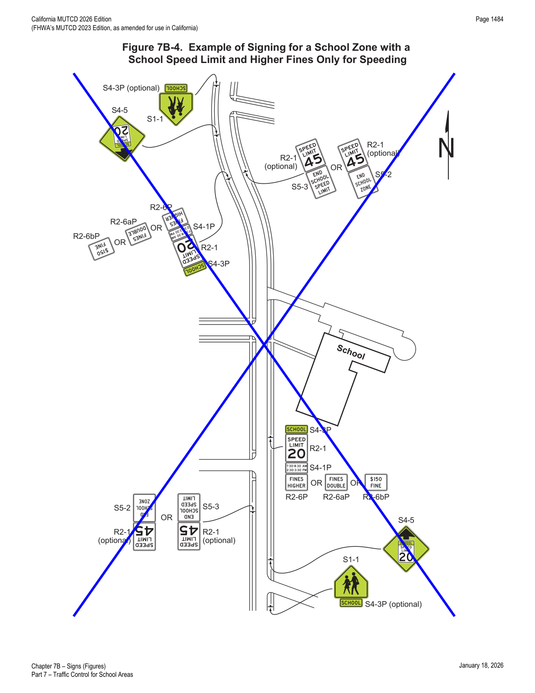
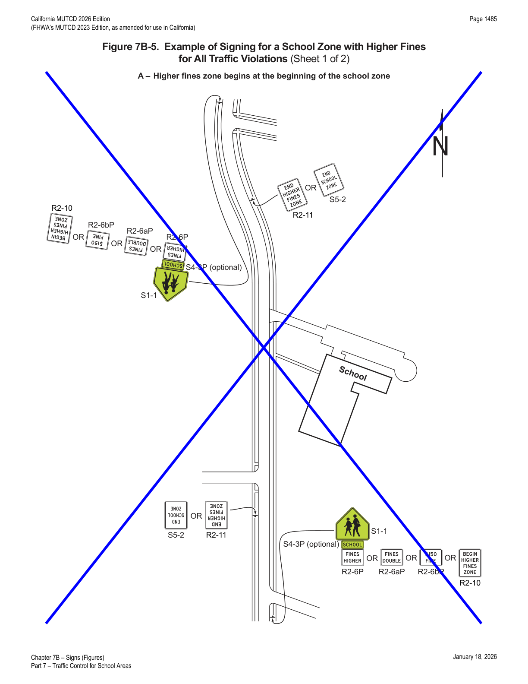
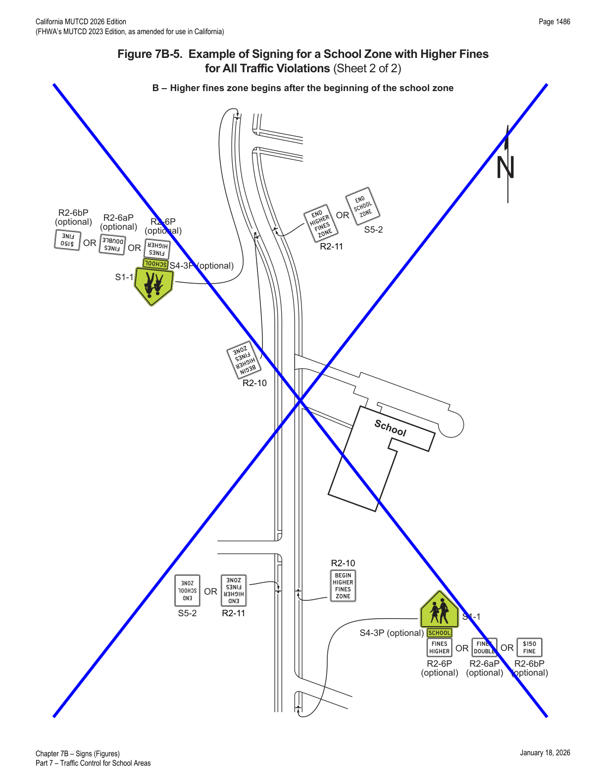
In practice: do not install R2-10/R2-11 higher-fines signs or R2-6P/R2-6aP/R2-6bP fines plaques on any California school-area project — this entire device family is retained in this reference only because the source document retains the full national-MUTCD text (struck through) for comparison, and an engineer working across state lines may need to recognize these devices from other jurisdictions.
7B.07Parking and Stopping (R7 and R8 Series) Signs
- 01Parking and stopping regulatory signs may be used to prevent parked or waiting vehicles from blocking pedestrians' views, and drivers' views of pedestrians, and to control vehicles as a part of the school traffic plan.
- 02Parking signs and other signs governing the stopping and standing of vehicles in school areas cover a wide variety of regulations. Typical examples of regulations are as follows:
- A. NO PARKING X:XX AM to X:XX PM SCHOOL DAYS ONLY
- B. NO STOPPING X:XX AM to X:XX PM SCHOOL DAYS ONLY
- C. XX MIN LOADING X:XX AM to X:XX PM SCHOOL DAYS ONLY
- D. NO STANDING X:XX AM to X:XX PM SCHOOL DAYS ONLY
- 03Sections 2B.53 through 2B.55 contain information regarding the signing of parking regulations in school zone areas.
In practice, R7/R8-series parking and stopping signs are frequently the difference between a compliant sight triangle and a hidden crosswalk — pairing a NO STOPPING or NO PARKING zone with the School Crossing assembly is often more effective at improving driver-pedestrian intervisibility than any additional warning sign.
★ Key Takeaways — Chapter 7B
- School sign/plaque sizes follow Table 7B-1 (Conventional Road / Minimum / Oversized) and Table 7B-1(CA) for the five California School Assemblies A(CA)–E(CA); Oversized sizes are mandatory on expressways and recommended on 4+ lane roads posted 40 mph or higher. All school warning signs and plaques use a fluorescent yellow-green background with black legend/border and must be retroreflective or illuminated.
- The School (S1-1) sign has four applications — School Area, School Zone, School Advance Crossing (with AHEAD or XX FEET plaque), and School Crossing (with the downward diagonal arrow plaque) — combined into California School Assemblies A(CA) (zone boundary), B(CA)/E(CA) (at-crossing, post or overhead), C(CA) (speed limit), and D(CA) (advance warning).
- School Crossing assemblies cannot be used on STOP/YIELD/signal-controlled approaches except at specific circular-intersection and channelized-right-turn conditions with a 20-foot crosswalk offset from the yield point; in-street and overhead pedestrian-crossing signs are limited to uncontrolled approaches.
- California has deleted every STOP-faced pedestrian-crossing sign variant (R1-5c, R1-6a, R1-6c, R1-9c) because CVC § 21950 does not require a full stop — only the YIELD-faced R1-5a, R1-6, R1-6b, and R1-9b remain valid.
- A reduced school speed limit zone begins 200–500 feet in advance of the school/crossing (increased beyond 200 ft if the limit is 30 mph+), is posted via the static Assembly C(CA) (SCHOOL plaque + speed limit + WHEN CHILDREN ARE PRESENT plaque) or a blank-out/changeable message sign; the "WHEN FLASHING" legend and specific-time-period plaques (S5-1, S4-1P, S4-4P, S4-6P) are expressly prohibited in California under CVC § 22352 and are deleted.
- CVC § 22358.4 separately allows a local authority to declare a 20/15 mph zone within 500 feet of a school and an extended 25 mph zone from 500–1,000 feet, subject to five statutory conditions (residential district, ≤30 mph outside the zone, ≤2 through lanes, and the two distance bands) and a documented engineering study citing CVC § 627.
- The entire Higher Fines Zone signing scheme (Section 7B.06: R2-10, R2-11, R2-6P, R2-6aP, R2-6bP, and related plaques) is deleted in California because no state law authorizes higher fines in school zones — none of these devices should be installed.
- School Bus Stop Ahead (S3-1) is mandatory wherever an approved bus stop lacks 200 feet of advance clear sight distance (CVC § 22504(c)); parking/stopping (R7/R8-series) signs support the school traffic plan by protecting sight lines at crossings.